Auditoría de seguridad y Pentesting – AdminPro Chile Platform
Nmap | Burp Suite | OWASP ZAP | SQLmap | Wireshark | XSStrike | SSLScan | John the Ripper
Contexto del proyecto
AdminPro Chile es una plataforma SaaS orientada a apoyar a emprendedores y pequeñas empresas en la gestión de sus procesos administrativos y financieros.
Debido a que la plataforma maneja información financiera sensible de los usuarios, fue necesario realizar una auditoría de seguridad antes de su despliegue productivo, con el objetivo de identificar posibles vulnerabilidades en la aplicación web y validar el cumplimiento de buenas prácticas de seguridad.
Problema de seguridad
Las aplicaciones SaaS que gestionan datos financieros deben cumplir estándares de seguridad para prevenir ataques comunes como:
- inyección SQL
- ataques XSS
- ataques de fuerza bruta
- explotación de configuraciones inseguras
- ataques de phishing mediante clonación de páginas
El desafío del proyecto fue evaluar la seguridad de la plataforma y garantizar que el sistema estuviera protegido frente a estas amenazas.
Metodología utilizada
Para evaluar la seguridad de la plataforma se aplicó una metodología estructurada basada en pruebas de penetración y análisis de configuración de seguridad.
Etapas de la auditoría:
- Reconocimiento y escaneo inicial
- Evaluación de vulnerabilidades web
- Pruebas de autenticación y cifrado
- Análisis de cabeceras de seguridad
- Simulación de ataques
- Hardening y mitigación
- Documentación y certificación
Esta metodología permitió identificar posibles debilidades en la configuración de seguridad y aplicar medidas correctivas.
Herramientas utilizadas
- Nmap – reconocimiento de puertos y servicios
- SQLmap – pruebas de inyección SQL
- Burp Suite – análisis de tráfico web
- OWASP ZAP – escaneo activo de vulnerabilidades
- XSStrike – detección de XSS
- SSLScan – análisis de configuración TLS
- John the Ripper – auditoría de contraseñas
- Wireshark / TShark – análisis de tráfico
Hallazgos de seguridad
Los resultados de la auditoría mostraron que la plataforma presentaba una buena resistencia frente a vulnerabilidades críticas.
Resultados principales:
- ✔ No se detectaron vulnerabilidades críticas de inyección SQL
- ✔ No se detectaron vulnerabilidades explotables de XSS
- ✔ El sistema de autenticación presentó políticas de seguridad robustas
- ✔ El cifrado TLS se encontraba correctamente configurado
Sin embargo, se identificaron 11 vulnerabilidades de configuración de criticidad media/baja, relacionadas con:
- Cabeceras HTTP de seguridad faltantes
- Políticas CSP débiles
- Riesgo de clickjacking mediante clonación de página
Evidencia Técnica
Las pruebas realizadas incluyeron análisis utilizando herramientas de seguridad ampliamente utilizadas en auditorías de aplicaciones web.
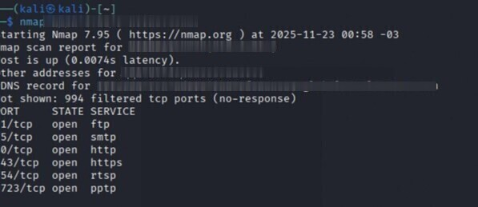
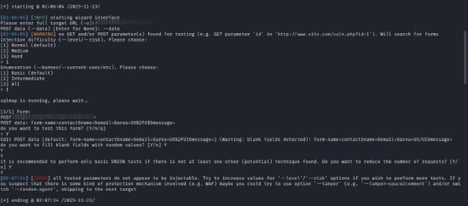
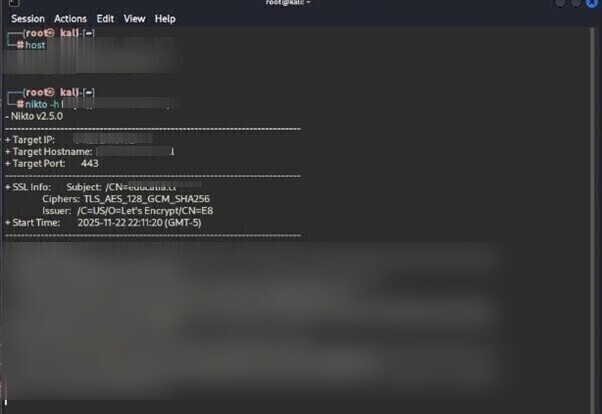
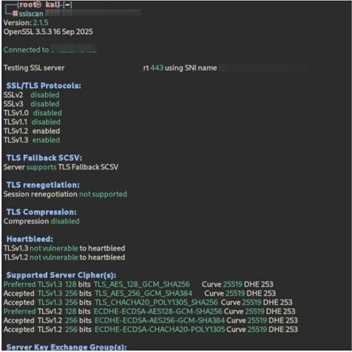
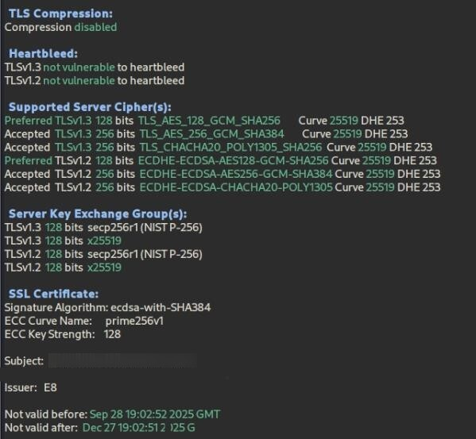
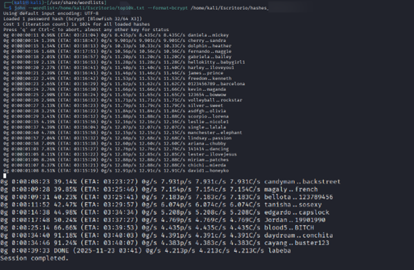
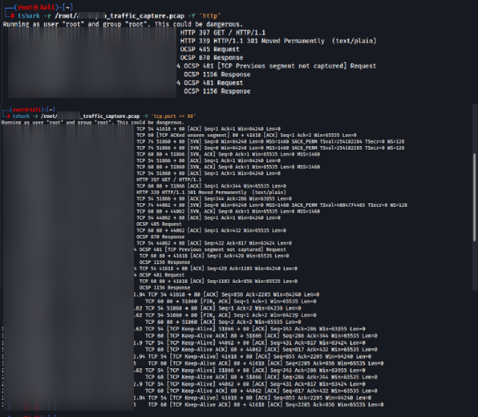
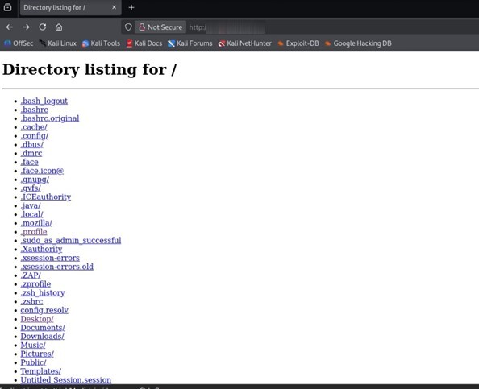
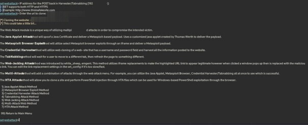
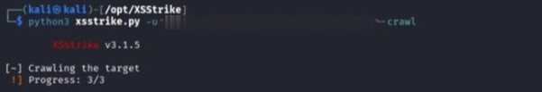
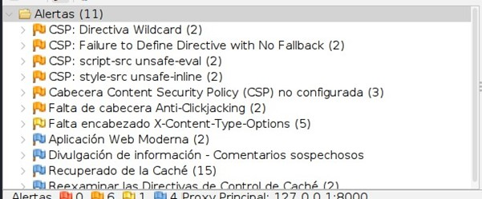
En el portafolio público las evidencias se muestran con información sensible censurada para proteger la seguridad de la plataforma.
Documentación generada
Como resultado del proyecto se generó documentación técnica y legal para la operación segura de la plataforma:
- > INFORME NORMA 27001 ADMINPROCHILE.pdf (Protegido por contraseña)
- > CHECKLIST DE CUMPLIMIENTO Y MITIGACIÓN DE RIESGOS.pdf
- > POLITICAS DE PRIVACIDAD ADMINPROCHILE.pdf
- > TERMINOS Y CONDICIONES ADMINPROCHILE.pdf
- > LICENCIAS DE USO ADMINPROCHILE.pdf
Esta documentación permitió establecer controles formales para la protección de datos y el uso seguro de la plataforma.
Resultado del proyecto
La auditoría permitió validar la seguridad de la plataforma antes de su despliegue productivo.
Resultados obtenidos:
- ✔ Identificación y mitigación de vulnerabilidades de configuración
- ✔ Implementación de medidas de hardening del servidor
- ✔ Validación de cumplimiento de buenas prácticas de seguridad web
- ✔ Generación de documentación técnica y normativa para el sistema
El proyecto finalizó con la certificación de la implementación de los protocolos de seguridad y la entrega de los informes correspondientes.
Lecciones aprendidas
Este proyecto permitió reforzar conocimientos en:
- Auditoría de seguridad en aplicaciones SaaS
- Pruebas de penetración en aplicaciones web
- Hardening de servidores
- Implementación de cabeceras de seguridad
- Documentación de cumplimiento y seguridad